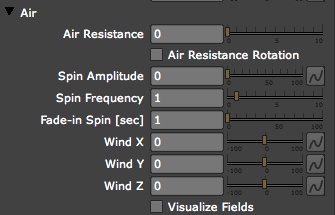

no spin motion
Amplitude 100
Amplitude 100
Physics tab> Air group
The Air group can change particles to make them appear to move naturally through air with resistance, spin, turbulence and more. Air is one of two Physics Models offered in the Physics tab. The other Physics Model is the Bounce group.
The Air group contains Air Resistance, Wind direction and other settings. Air also contains two displacement systems called Turbulence Field and Spherical Field. Note: In explaining the Air controls, we will often refer to the 'spin' of a particle. By this, we mean the circular, spring-like, random motion of particles. There is no 'Spin' setting, but there are many controls that affect this spinning motion.

The Air group.
Air Resistance
Makes the particle velocity decrease over time as the particle's move through space. Useful for explosions and fireworks where particles should start with a high velocity and then gradually slow down. Velocity is set with the Emitter> Velocity control.
| Air Resistance Off | Air Resistance On |
Air Resistance Rotation checkbox
As 'gravity' takes over, the particles start to fall. But as the particles' flight slows down, they should also stop rotating. This checkbox stops the particles' flight by decreasing their velocity. It is turned off by default.
When Air Resistance Rotation is turned on, Air Resistance will affect the rotation of particles as well as their velocity. The particles will rotate fast in the beginning, but as they get slowed by Air Resistance, their rotation will decrease. This behavior helps to make the movement look natural.
Note: Particle rotation is set with the Particle tab> Rotation group. Remember that full 3D rotation applies only to Textured Polygon particle types.
Spin Amplitude
Makes particles move in randomized, circular orbits. A value of 0 turns off the spinning motion. Low values make small circular orbits. High values make large circular orbits.
This behavior is useful for adding randomness to particle motion, which makes the animation look more natural. Spin Amplitude can also be used to create a swarming look to the particles.
Spin Frequency
Sets how fast the spinning particles move in their orbit. Low values mean the particles spin slowly in their orbit. Higher values make the particles spin faster. The clips below were rendered with Motion Blur to show the motion clearly.
| |
||||
| Amplitude off, no spin motion |
Frequency low, Amplitude 100 |
Frequency high, Amplitude 100 |
Fade-in Spin [sec]
Fade-in Spin sets how long the particle lives before it is fully affected by the spin. Measured in seconds. High values means the spin takes awhile before the spin affects the particles, making the animation fade in gradually overtime.
Wind X, Y, Z
The Wind controls makes all particles move uniformly in the Wind direction. Wind X move the particles left or right, and Wind Y move the particle up or down. Wind Z will make the particles appear to move into or out of the screen. To make the Wind more realistic, this property should be keyframed so it varies a little over time. Adding some Spin or Turbulence also helps to increase the realism.
Visualize Fields checkbox
This checkbox simplifies working with Turbulence Field or Spherical Field. When working with the Field groups, sometimes you need to know exactly how the displacement field looks. Turn this checkbox On to make all fields viewable. Doing so lets you adjust the field more easily.